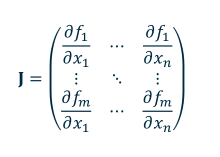

The Jacobian matrix is the matrix of partial derivatives. Given a function \(\boldsymbol{f} = (f_1(\boldsymbol{x}), f_2(\boldsymbol{x}), ..., f_m(\boldsymbol{x})) \), the Jacobian matrix would be

The Jacobian matrix may be denoted with several different symbols. Some are listed below:
For a multivariate function ( ) the Jacobian matrix gives the best linear approximnation to \(\boldsymbol{f} \) at \(\boldsymbol{x} \):
\(\boldsymbol{f}(\boldsymbol{x} + h \boldsymbol{v}) \approx \boldsymbol{f}(\boldsymbol{x}) + \boldsymbol{J_f}(\boldsymbol{x})(h \boldsymbol{x}) \)
Note: